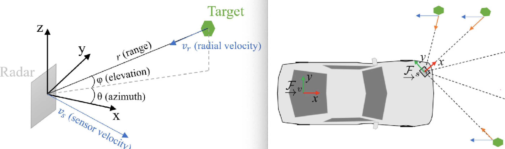
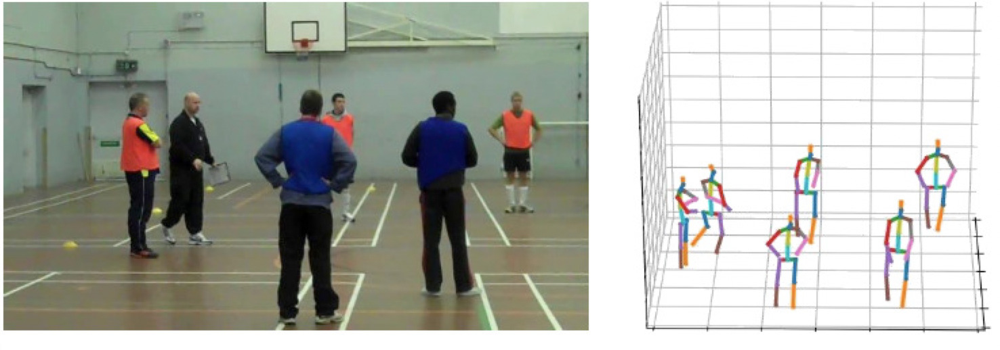
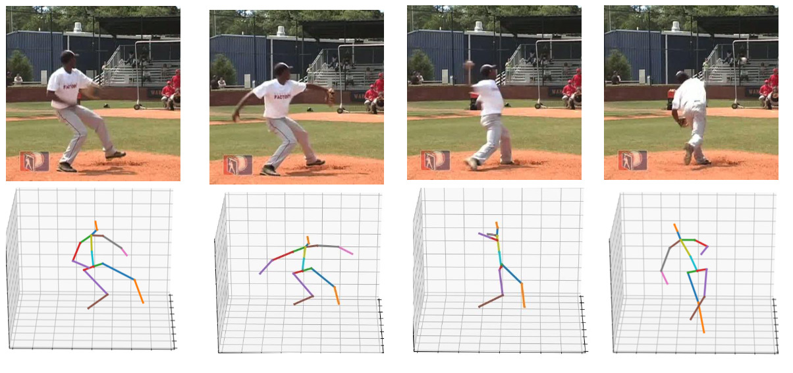
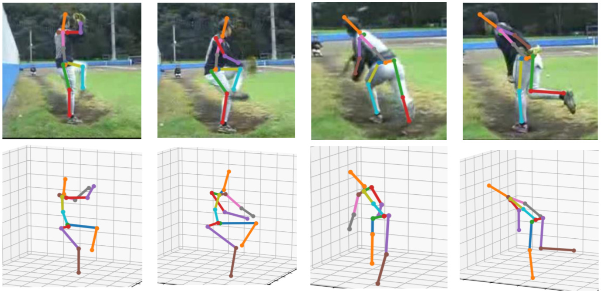

Google Scholar Citation Index:
website
Estimating Reflectance Layer from A Single Image:
Integrating Reflectance Guidance and Shadow/Specular Aware
Learning
[
PDF]
Yeying Jin, Ruoteng Li, Wenhan Yang, Robby T. Tan
AAAI Conference on Artificial Intelligence, AAAI, 2023
Unsupervised Night Image Enhancement:
When Layer Decomposition Meets
Light Effects Suppression
[
PDF]
Yeying Jin, Wenhan Yang, Robby T. Tan
European Conference on Computer Vision, ECCV 2022
Learning to Remove Rain in Video with Self-Supervision
[
PDF]
Wenhan Yang, Robby T. Tan, Shiqi Wang, and Jiaying Liu
IEEE Transactions on Pattern Analysis and Machine
Intelligence, TPAMI, 2022.
Dual Networks based 3D Multi-Person Pose Estimation from
Monocular Video
[
PDF]
Cheng Yu, Bo Wang, Robby T. Tan
IEEE Transactions on Pattern Analysis and Machine
Intelligence, TPAMI, 2022
Feature-Aligned Video Raindrop Removal with Temporal Constraints
[
TIP
|
ArXiv]
Wending Yan, Lu Xu, Wenhan Yang, Robby T. Tan
IEEE Transactions on Image Processing, TIP, 2022.
Structure Representation Network and Uncertainty Feedback
Learning for Dense Non-Uniform Fog Removal
[
PDF]
Yeying Jin, Wending Yan, Wenhan Yang, Robby T. Tan
Asian Conference on Computer Vision, ACCV, 2022
Object Detection in Foggy Scenes by Embedding Depth and
Reconstruction into
Domain Adaptation
[
PDF]
Xin Yang, Michael Bi Mi, Yuan Yuan, Xin Wang, Robby T. Tan
Asian Conference on Computer Vision, ACCV, 2022
Optical Flow Estimation in Dense Foggy Scenes with
Domain-Adaptive Networks
[
PDF
|
CVPR'21 Version]
Wending Yan, Aashish Sharma, Robby T. Tan
IEEE Transactions on Artificial Intelligence, TAI, 2022.
Human Object Interaction Detection Using Two-Direction Spatial Enhancement and Exclusive Object Prior
[
PDF |
ArXiv]
Lu Liu and Robby T. Tan
Pattern Recognition, April 2022
DC-ShadowNet: Single-Image Hard and Soft Shadow Removal Using Unsupervised Domain-Classifier Guided Network
[
PDF]
Jin Yeying, Aashish Sharma, Robby T. Tan
International Conference on Computer Vision, ICCV 2021.
Recurrent Multi-Frame Deraining: Combining Physics Guidance and Adversarial Learning
[
PDF]
Wenhan Yang, Robby T. Tan, Jiashi Feng, Shiqi Wang, and Jiaying Liu
IEEE Transactions on Pattern Analysis and Machine
Intelligence, TPAMI, May 2021.
Certainty Driven Consistency Loss on Multi-Teacher Networks for Semi-Supervised Learning
[
PDF |
ArXiv]
Lu Liu and Robby T. Tan
Pattern Recognition, December 2021

Continuous-time Radar-inertial Odometry for Automotive Radars
[
PDF]
Yin Zhi Ng, Benjamin Choi, Robby T. Tan and Lionel Heng
International Conference on Intelligent Robots and Systems, IROS 2021
Nighttime Visibility Enhancement by Increasing the Dynamic Range and Suppression of Light Effects
[
PDF]
Aashish Sharma, Robby T. Tan
Computer Vision and Pattern Recognition, CVPR 2021.
Self-Aligned Video Deraining with Transmission-Depth Consistency
[
PDF]
Yan Wending, Yang Wenhang, Dai Dengxin, Robby T. Tan
Computer Vision and Pattern Recognition, CVPR 2021.
Monocular 3D Multi-Person Pose Estimation by Integrating Top-Down and Bottom-Up Networks
[
PDF]
Cheng Yu, Bo Wang, Bo Yang, Robby T. Tan
Computer Vision and Pattern Recognition, CVPR 2021.

Graph and Temporal Convolutional Networks for 3D Multi-person Pose Estimation in Monocular Videos
[
PDF]
Cheng Yu, Bo Wang, Bo Yang, Robby T. Tan
AAAI Conference on Artificial Intelligence, AAAI 2021.
AI-enhanced white light colonoscopy with attention-guidance predicts colorectal cancer invasion depth
[
PDF]
S. Liu, X. Luo, J. Wang, Z. Han, Y. Yu, Z. Chen, F. Huang,
Y. Xu, J. Cai, Q. Zhang, W. Qiao, I. Ng, Robby T. Tan, H. Yu.
Gastrointestinal Endoscopy, 2021.
Object Tracking Using Spatio-Temporal Future Prediction
[
PDF]
Yuan Liu, Ruoteng Li, Robby T. Tan, Yu Cheng, Xiubao Sui
ArXiv, 2021
Multi-Scale Networks for 3D Human Pose Estimation with Inference Stage Optimization
[
PDF]
Cheng Yu, Bo Wang, Bo Yang, Robby T. Tan
Arxiv 2021
Nighttime Stereo Depth Estimation using Joint
Translation-Stereo Learning: Light Effects and
Uninformative Regions
[
PDF]
Aashish Sharma, Cheong Loong Fah, Lionel Heng, Robby T. Tan
International Conference on 3D Vision (3DV), 2020
Single-Image Camera Response Function Using Prediction Consistency and Gradual Refinement
[
PDF]
Aashish Sharma, Robby T. Tan, Cheong Loong Fah
Asian Conference in Computer Vision (ACCV), 2020
Nighttime Defogging Using High-Low Frequency Decomposition and Grayscale-Color Networks
[
PDF]
Wending Yan, Robby T. Tan, Dengxin Dai
European Conference in Computer Vision (ECCV), 2020
Object Tracking using Spatio-Temporal Networks for Future Prediction Location
[
PDF]
Yuan Liu, Ruoteng Li, Yu Cheng, Robby T. Tan, X. Sui
European Conference in Computer Vision (ECCV), 2020
Single Image Deraining: From Model-Based to Data-Driven and Beyond
[
PDF]
Wenhan Yang, Robby T. Tan, Shiqi Wang, Yuming Fang, Jiaying Liu
IEEE Transactions on Pattern Analysis and Machine
Intelligence, TPAMI, 2020.
Optical Flow in Dense Foggy Scenes using Semi-Supervised Learning
[
PDF]
Wending Yan, Aashish Sharma, Robby T. Tan
Computer Vision and Pattern Recognition, CVPR 2020
All in One Bad Weather Removal using Architectural Search
[
PDF]
Ruoteng Li, Robby T. Tan, Cheong Loong Fah
Computer Vision and Pattern Recognition, CVPR 2020
Self-Learned Video Rain Streak Removal: When Cyclic Consistency Meets Temporal Correspondence
[
PDF]
Wenhan Yang, Robby T. Tan, Shiqi Wang, Jiaying Liu,
Computer Vision and Pattern Recognition, CVPR 2020

3D Human Pose Estimation using Spatio-Temporal Networks with Explicit Occlusion Training
[
PDF]
Cheng Yu, Bo Yang, Bo Wang, Robby T. Tan
AAAI Conference on Artificial Intelligence, AAAI 2020.
When Labelled Data Hurts: Deep Semi-Supervised Classification with the Graph 1-Laplacian
[
PDF]
Angelica I. Aviles-Rivero, Nicolas Papadakis, Ruoteng Li, Samar M Alsaleh, Robby T Tan, Carola-Bibiane Schonlieb
ArXiv, 2020

Occlusion-Aware Networks for 3D Human Pose Estimation in
Video
[
PDF]
Cheng Yu, Bo Yang, Bo Wang, Wending Yan, Robby T. Tan
International Conference on Computer Vision, ICCV 2019
RainFlow: Optical Flow under Rain Streaks and Rain Veiling Effect
[
PDF]
Li Ruoteng, Robby T. Tan, A. Aviles-Rivero, Q. Fan,
C. Schoenlieb, L.F. Cheong
International Conference on Computer Vision, ICCV 2019
Heavy Rain Image Restoration: Integrating Physics Model and Conditional Adversarial Learning
[
PDF]
Li Ruoteng, Cheong Loong Fah, Robby T. Tan
Computer Vision and Pattern Recognition, CVPR 2019
Joint Rain Detection and Removal from a Single Image with Contextualized Deep Networks
[
PDF]
Wenhan Yang, Robby T. Tan, Jiashi Feng, Jiaying Liu, Zongming Guo, and Shuicheng Yan
IEEE Transactions on Pattern Analysis and Machine
Intelligence (TPAMI), 2019
GraphX^NET− Chest X-Ray Classification Under Extreme
Minimal Supervision [
PDF]
A. Aviles-Rivero, N. Papadakis, R. Li, P. Sellars, Q. Fan,
Robby T. Tan, C. Schoenlieb
International Conference on Medical Image Computing and
Computer Assisted Intervention, MICCAI 2019
Convolutional Neural Networks for Automated Fracture
Detection and Localization on Wrist Radiographs
[
PDF]
Yee Liang Thian, Yiting Li, Pooja Jagmohan, David Sia, Vincent Ern Yao Chan, Robby T. Tan
Radiology: Artificial Intelligence, Vol. 1, Issue 1, 2019.
Certainty-Driven Consistency Loss for Semi-supervised Learning [
PDF]
Yiting Li, Lu Liu, Robby T. Tan
arXiv, January 2019
Loss Guided Activation for Action Recognition in
Still Images
[
PDF]
Lu Liu, Robby T. Tan, Shaodi You
Asian Conference on Computer Vision, ACCV 2018.
Robust Optical Flow in Rainy Scenes
[
PDF
|
Supp]
Li Ruoteng, Robby T. Tan, Cheong Loong Fah
European Conference on Computer Vision, ECCV 2018.
Attentive Generative Adversarial Network for Raindrop Removal from a Single Image
[
PDF |
project page]
Rui Qian, Robby T. Tan, Wenhan Yang, Jiajun Su, Jiaying Liu
Computer Vision and Pattern Recognition, CVPR
2018 (Spotlight)
Deep Joint Rain Detection and Removal From a Single
Image
[
Project Page
|
PDF |
Supp]
W. Yang, Robby T. Tan, J. Feng, J. Liu, Z. Guo, S. Yan
Computer Vision and Pattern Recognition, CVPR
2017.
Single Image Rain Streak Separation Using Layer
Priors [
TIP
|
PDF]
Yu Li, Robby T. Tan, X. Guo, J. Lu, Michael S. Brown.
IEEE Transactions on Image Processing (TIP), 2017
Single Image Deraining using Scale-Aware Multi-Stage Recurrent Network [
PDF]
Li Ruoteng, Cheong Loong Fah, Robby T. Tan
arXiv, September 2017
Haze Visibility Enhancement: A Survey and Quantitative Benchmarking
[
PDF]
Yu Li, Shaodi You, Michael S. Brown, Robby T. Tan
Computer Vision and
Image Understanding, CVIU 2017.
Water Detection through Spatio-Temporal Invariant
Descriptors
[
PDF]
Pascal Mettes, Robby T. Tan, Remco Veltkamp
Computer Vision and Image Understanding (CVIU),
2017.
Robust
Optical Flow Estimation of Double-Layer Images
under Transparency or Reflection
[
PDF]
Jiaolong Yang, Hongdong Li, Yuchao Dai, Robby T. Tan.
In proceedings of Computer Vision and Pattern Recognition (CVPR), 2016,
June 26-July 1, Las Vegas, USA.
Rain Streak Removal Using Layer Priors
[
PDF]
Yu Li, Robby T. Tan, X. Guo, J. Lu, Michael S. Brown.
In proceedings of Computer Vision and Pattern
Recognition (CVPR), 2016, June 26-July 1, Las Vegas,
USA.
Video Foreground Co-Segmentation Based on Common Fate
[
PDF]
Jiaming Guo, Loong Fah Cheong, Robby T. Tan
IEEE Transactions on Circuits
and Systems for Video Technology (TCSVT), 2016
Waterdrop Stereo
[
PDF]
Shaodi You, Robby T. Tan, Rei Kawakami, Yasuhiro Mukaigawa,
Katsushi Ikeuchi
arXiv, Apri 2016
Understanding image concepts using ISTOP model
[
PDF]
M.S. Zarchi, Robby T. Tan, C. van Gemeren, A. Monadjemi,
R.C. Veltkamp
Pattern Recognition, May 2016
Adherent Raindrop Modeling, Detection and Removal in
Video
[
PDF |
Project Page]
Shaodi You, Robby T. Tan, Rei Kawakami, Yasuhiro Mukaigawa,
Katsushi Ikeuchi
IEEE Transactions on Pattern Analysis and Machine
Intelligence (TPAMI), 2016
Nighttime Haze Removal with Glow and Multiple Light Colors
[
PDF
|
Code]
Yu Li, Robby T. Tan, Michael S. Brown,
in proceedings of International Conference on Computer
Vision (ICCV), 2015, December 13-16, Santiago, Chile.
Simultaneous Video Defogging and Stereo Reconstruction
[
Video
|
Project Page
|
PDF ]
Zhuwen Li, Ping Tan, Robby T. Tan, Danping Zhou, Steven
Zhiying Zhou and Cheong Loong Fah,
in proceedings of Computer Vision and Pattern Recognition (CVPR 2015),
June 8-10, 2015, Boston,
USA. (oral presentation)
A Contrast Enhancement Framework with JPEG Artifacts
Suppression
[
PDF ]
Yu Li, G. Fangfang, Robby T. Tan, Michael Brown,
in proceedings of European Conference on Computer Vision (ECCV 2014),
September 6-12, 2014, Zurich, Switzerland
Raindrop Detection and Removal from Long Range
Trajectories
[
PDF ]
Shaodi You, Robby T. Tan, Rei Kawakami, Yasuhiro
Makaigawa, Katsushi Ikeuchi,
in proceedings of Asian Conference on Computer Vision (ACCV 2014),
November 1-5, 2014, Singapore. (oral presentation)
Consistent Foreground Co-Segmentation
[
PDF ]
Jiaming Guo, Loong-Fah Cheong, Robby T. Tan and Steven Zhiying
Zhou,
in proceedings of Asian Conference on Computer Vision (ACCV 2014),
November 1-5, 2014, Singapore. (oral presentation)
Dyadic Interaction Detection from Pose and Flow
[
PDF ]
Coert van Gemeren, Robby Tan, Ronald Poppe and Remco Veltkamp
International Workshop on Human Behavior Understanding, in
conjunction with European Conference on Computer Vision (ECCV)
2014.
On the segmentation and classification of water in videos
[
PDF ]
Pascal Mettes, Robby Tan and Remco Veltkamp
in proceedings of International Joint Conference on Computer
Vision, Imaging and Computer Graphics Theory and Applications,
2014, Lisbon, Portugal.
A bottom-up Approach to class-dependent feature
selection for material classification
[
PDF ]
Pascal Mettes, Robby Tan and Remco Veltkamp
in proceedings of International Joint Conference on Computer
Vision, Imaging and Computer Graphics Theory and Applications,
2014, Lisbon, Portugal
Human body orientation estimation using a committee based approach
[
PDF ]
Manuela Ichim, Robby Tan, Nico van de Aa and Remco Veltkamp
in proceedings of International Joint Conference on Computer
Vision, Imaging and Computer Graphics Theory and Applications,
2014, Lisbon, Portugal
Hidden conditional random fields for action
recognition
[
PDF]
Lifang Chen, Nico van de Aa, Robby Tan and Remco Veltkamp
in proceedings of International Joint Conference on Computer
Vision, Imaging and Computer Graphics Theory and Applications,
2014,
Lisbon, Portugal
Specular Reflection and Specularity
Robby T. Tan
in Computer Vision, A Reference Guide, ISBN: 0387491384,
Springer, 2014
Dehazing and Defogging
Robby T. Tan
in Computer Vision, A Reference Guide, ISBN: 0387491384,
Springer, 2014
Enhancing Image Data (Patents)
US (
website) and Australia (2009344148),
WIPO
Robby T. Tan, Richard Hartley and Peter Carr
Adherent Raindrop Detection and Removal in Video
[
PDF
|
Project Page ]
Shaodi You, Robby T. Tan, Rei Kawakami, Katsushi Ikeuchi.
in proceedings of IEEE Computer Society Conference on
Computer Vision and Pattern Recognition (CVPR 2013),
June 25-27, 2013, Portland, Oregon, USA
Spectral Sensitivity and White Balance Estimation from Sky
Images
[
PDF
|
Project
Page ]
Rei Kawakami, Hongxun Zhao, Robby T. Tan, Katsushi Ikeuchi,
International Journal of Computer Vision (IJCV), 2013
Robust and Fast Motion Estimation for Video
Completion
[
PDF ]
Shaodi You, Robby T. Tan, Rei Kawakami, Katsushi Ikeuchi.
in the proceedings of IAPR International Workshop on Machine Vision
Applications (MVA 2013),
May 20-23, 2013, Kyoto, Japan.
Utrecht-Multi-Person-Motion Benchmark: a multi-person dataset
with synchronized video and motion capture data for evaluation
of articulated human motion and interaction
[
PDF |
URL:
http://www.projects.science.uu.nl/umpm/
]
Nico Van Der Aa, Geert-Jan Giezeman, Xinghan Luo, Robby T. Tan, Remco Veltkamp
to appear in IEEE Workshop on Human Interaction in Computer Vision (HICV2011)
In conjunction with ICCV 2011, Barcelona,
2011.
Accuracy of the Spider Model in Decomposing Layered
Surfaces
[
PDF ]
T. Morimoto, Robby T. Tan, R. Kawakami, and K. Ikeuchi
to appear in IEEE Color and Photometry in Computer Vision Workshop
In conjunction with ICCV 2011, Barcelona,
2011.
Refined Non-Rigid Registration of a Panoramic Image Sequence
to a LiDAR Point Cloud
[
PDF ]
A. Swart, J. Broere, R. Veltkamp, Robby T. Tan
Photogrammetric Image Analysis, PIA 2011,
October 2011, Munich, Germany.
Multi-person Tracking Based on Vertical Reference Lines and Dynamic Visibility Analysis
[
PDF ]
X. Luo, Robby T. Tan and R. Veltkamp
IEEE International Conference on Image Processing, ICIP, 2011
September 2011, Brussel, Belgium.
Utrecht Multi-Person Motion (UMPM) Benchmark
[
PDF
]
N.P. van der Aa, X. Luo, G.J. Giezeman, Robby T. Tan, and R.C. Veltkamp
Utrecht university technical report, UU-CS-2011-027, 2011
Estimating Optical Properties of Layered Surfaces Using the
Spider Model
[
PDF
|
Video ]
T. Morimoto, Robby T. Tan, R. Kawakami, and K. Ikeuchi
in proceedings of IEEE Computer Society Conference on
Computer Vision and Pattern Recognition (CVPR 2010),
June 13-18, 2010, San Francisco, USA
Human Pose Estimation for Multiple Persons based on Volume Reconstruction
[
PDF ]
X. Luo, Robby T. Tan and R. Veltkamp
In the Proceedingss of IEEE International Conference on Pattern Recognition, ICPR, 2010.
Istanbul,
Turkey.
Estimating Basis Functions for Spectral Sensitivity of Digital Cameras
[
PDF ]
H. Zhao, Rei Kawakami, Robby T. Tan, Katsushi Ikeuchi
in proceedings of Meeting on Image Image Recognition and Understanding
(MIRU 2009), Japan.
Visibility in Bad Weather from A Single Image
[
PDF |
Project
Page ]
Robby T. Tan
in proceedings of IEEE Computer Society Conference on
Computer Vision and Pattern Recognition (CVPR 2008), June 24-26, 2008, Alaska, USA
Context First
[
PDF ]
D. Heesch, Robby T. Tan, M. Petrou
In the Proceedingss of SSPR/SPR 2008.
Separating illumination and surface spectral from
multicolor signals
Akifumi Ikari, Rei Kawakami, Robby T. Tan, Katsushi Ikeuchi,
in Digitally Archiving Cultural Objects,
ISBN 9783540754114, Chapter 15, Springer, 2008.
Consistent surface color for texturing large objects in
outdoor scenes
Rei Kawakami, Robby T. Tan, Katsushi Ikeuchi,
in Digitally Archiving Cultural Objects,
ISBN 9783540754114, Chapter 14, Springer, 2008.
Color constancy through inverse-intensity chromaticity space,
Robby T. Tan, Ko Nishino, Katsushi Ikeuchi,
in Digitally Archiving Cultural Objects,
ISBN 9783540754114, Chapter 16, Springer, 2008.
Separating reflection components of textured surfaces using a
single image,
Robby T. Tan, Katsushi Ikeuchi,
in Digitally Archiving Cultural Objects,
ISBN 9783540754114, Chapter 17, Springer, 2008.
On Automatic Absorption Detection for Imaging Spectroscopy: A
Comparative Study
[
PDF ]
Zhouyu Fu, A. Robles-Kelly, T. Caelli, Robby T. Tan
IEEE Transactions on Geoscience and Remote Sensing,
45(11), pp.3827-3844,
2007.
Visibility Enhancement for Roads with Foggy or Hazy Scenes
[
PDF ]
Robby T. Tan, Niklas Pettersson, Lars Petersson
in Proceedingss of IEEE Intelligent Vehicles Symposium, IV 2007.
Istambul,
Turkey.
Illumination color and intrinsic surface properties
[
PDF ]
(
the recipient of IPSJ Best Paper 2006 AWARD)
IPSJ is the largest and
leading information science society in Japan
Robby T. Tan, Katsushi Ikeuchi,
IPSJ Transactions on Computer Vision and Image Media,
(46) SIG9, pp.17-40,
2005.
Specular free spectral imaging using orthogonal subspace
projection
[
PDF ]
Zhouyu Fu, Robby T. Tan, Terry Caelli
in Proceedingss of International Conference on Pattern Recognition, ICPR, 2006
Hongkong.
Invariant Object Material Identification via Discriminant
Learning on Absorption Features
[
PDF ]
Zhouyu Fu, Antonio Robles-Kelly, Robby T. Tan, Terry Caelli
Conference on Computer Vision and Pattern Recognition Workshop
(CVPRW'06), 2006
Consistent Surface Color for Texturing Large Objects in Outdoor
Scenes
[
PDF ]
Rei Kawakami, Robby T. Tan, Katsushi Ikeuchi,
in proceedings of IEEE Computer Society on
International Conference on Computer Vision (ICCV 2005),
October 15-21, 2005, Beijing, China
Reflection Component Decomposition of Textured Surfaces using
Linear Basis Functions
[
PDF ]
Robby T. Tan, Katsushi Ikeuchi
in proceedings of IEEE Computer Society Conference on
Computer Vision and Pattern Recognition (CVPR 2005),
June 20-26, 2005, San Diego, USA
Separating reflection componeants of textured surfaces using a
single image
[
PDF ]
Robby T. Tan, Katsushi Ikeuchi,
IEEE Transactions on Pattern Analysis and Machine Intelligence (TPAMI),
27(2), pp.179-193, February, 2005
Illumination Color and Intrinsic Surface Properties:
Physics-based Color Analyses from A Single Image
[
PDF ]
Robby T. Tan
the University of Tokyo, March, 2004
Awarded as one of Excellent Theses for a Doctorate and a Graduation, IPSJ 2005.
A Robust Framework to Estimate Surface Color from Changing
Illumination
[
PDF ]
Rei Kawakami, Robby T. Tan, Katsushi Ikeuchi
in proceedings of Asian Conference on Computer Vision (ACCV 2004),
Korea
Separating Illumination and Surface Spectral from Multiple
Color Signals
[
PDF ]
A. Ikari, Robby T. Tan, Katsushi Ikeuchi
in proceedings of Asian Conference on Computer Vision (ACCV 2004),
Korea
Separating reflection components based on chromaticity and
noise analysis,
[
PDF ]
Robby T. Tan, Ko Nishino, Katsushi Ikeuchi,
IEEE Transactions on Pattern Analysis and Machine Intelligence (TPAMI),
26(10), pp.1373-1379, October, 2004
Color constancy through inverse-intensity chromaticity space,
[
PDF
]
Robby T. Tan, Ko Nishino, Katsushi Ikeuchi,
Journal of the Optical Society of America A. (JOSA A),
21(3), pp.321-334, March, 2004
Intrinsic Properties of an Image with Hightlights
[
PDF ]
Robby T. Tan, Katsushi Ikeuchi
in proceedings of Meeting on Image Image Recognition and Understanding (MIRU 2004),
July 23-25, 2004, Hakodate, Japan
Separating Reflection Components of Textured Surfaces using a
Single Image
[
PDF
|
Project Page ]
Robby T. Tan, Katsushi Ikeuchi
in proceedings of IEEE International Conference on Computer Vision (ICCV
2003),
pp. 870-877, October 13-16 2003, Nice, France
Polarization-based Inverse Rendering from a single view
[
PDF ]
D. Miyazaki, Robby T. Tan, K. Hara, K. Ikeuchi,
in proceedings of IEEE International Conference on Computer Vision (ICCV
2003),
October 13-16 2003, Nice, France
Illumination Chromaticity Estimation using Inverse-Intensity
Chromaticity Space
[
PDF
|
Project
Page ]
Robby T. Tan, Ko Nishino, Katsushi Ikeuchi
in proceedings of IEEE Computer Society Conference on
Computer Vision and
Pattern Recognition (CVPR 2003), June 18-20, 2003, Wisconsin, USA. (oral presentation)
Estimating Illumination Position, Color, and Surface
Reflectance Properties from a Single Image
[
PDF , in Japanese]
Kenji Hara, Robby T. Tan, Ko Nishino A. Nakazawa, K. Ikeuchi
IPSJ Transactions on Computer Vision and Image Media,
44(9), pp.94-104, 2003
Estimating Chromaticity of Multicolored Illuminations
[
PDF]
Robby T. Tan, Katsushi Ikeuchi
in IEEE International Workshop on Color and Photometric Methods in
Computer Vision
(CPMCV, in conjunction with ICCV 2003), October 12, 2003,
Nice, France
Reflection Components Separation based-on Chromaticity and
Noise Analysis [
PDF]
Robby T. Tan, Ko Nishino, Katsushi Ikeuchi
in IEEE International Workshop on Color and Photometric Methods in
Computer Vision
(CPMCV, in conjunction with ICCV 2003), October 12, 2003,
Nice, France
Photometric Approach towards the Modeling of Real World
Daisuke Miyazaki, Robby T. Tan, Kenji Hara, Katsushi Ikeuchi
Computer Vision and Image Media, March 2003
Light Source Position and Color Estimation from a Single Color Image
K. Hara, Robby T. Tan, K. Nishino, A. Nakazawa, K. Ikeuchi
in proceedings of Meeting on Image Image Recognition and Understanding (MIRU 2002),
Japan
Photometric Aspects on the Preservation of Cultural
Assets
K. Nishino, K. Hara, Robby T. Tan, D. Miyazaki and K. Ikeuchi
in Proc. of Virtual Systems and Multimedia VSMM '02, pp926-933, Sep., 2002.
Separating Diffuse and Specular Reflection Components based on
Surface Color Ratio and Chromaticity
Robby T. Tan, Ko Nishino, Katsushi Ikeuchi.
in proceedings of IAPR International Workshop on Machine Vision
Applications (MVA 2002), Nara, Japan